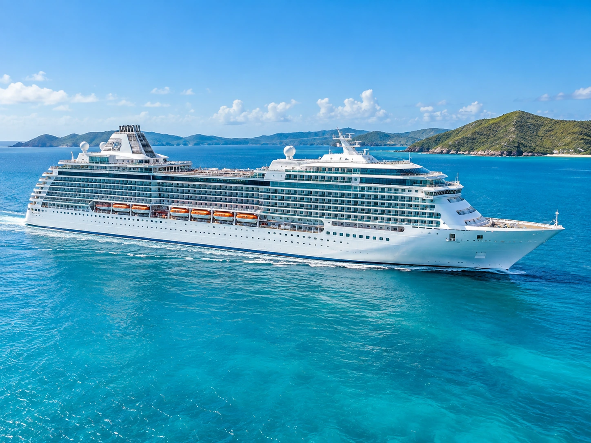

There is no single rating that tells the whole story
When people ask which cruise ship has the best overall ratings, the answer depends on whether you are looking at an editor score, passenger reviews, or a ranking from a travel publication. Review count matters too. A 4.2 score based on more than 2,000 passenger reviews gives you a different kind of evidence than a newer ship with only a few dozen reviews.
The best way to compare ships is to look at the rating, the number of reviews, and how recent those reviews are.
Celebrity Xcel stands out for its editor rating
As of September 2026, Cruise Critic lists Celebrity Xcel with a 5.0 editor rating. Its member rating is 4.1, with roughly 50 passenger reviews, so the ship is still building a longer review history.
If you are attracted to a newer ship and put a lot of weight on professional reviews, Xcel is one of the clearest standouts in this comparison.
Celebrity Eclipse and Reflection have a deeper passenger record
Cruise Critic shows Celebrity Eclipse at a 4.2 member rating with more than 2,000 reviews, along with a 4.5 editor rating. Celebrity Reflection also carries a 4.2 member rating with more than 2,000 reviews, with a 4.0 editor rating.
Those larger review counts make Eclipse and Reflection useful if you care more about a long passenger track record than having the newest ship.
So which cruise ship has the best overall ratings?
If you are judging by editor score, Celebrity Xcel is the standout in this group. If you want the strongest combination of a high passenger rating and thousands of reviews, Celebrity Eclipse and Celebrity Reflection have the more established review history.
I would not book from a single number alone. Read the newest reviews for your specific itinerary and cabin category, because a ship can score well overall while still being a poor fit for the kind of trip you want.
What to compare before booking
Check the itinerary, number of sea days, cabin location, dining options, pool space, entertainment, spa and fitness facilities, and whether the sailing is aimed more at couples, families, or a mixed crowd. Also check whether the ship has recently been renovated.
Ratings change as more people sail, so always check the latest reviews before paying a deposit.
Rating sources checked
Current ratings were checked in September 2026 using Cruise Critic member and editor pages for Celebrity Xcel, Celebrity Eclipse, and Celebrity Reflection.